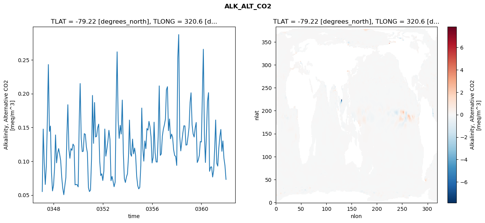
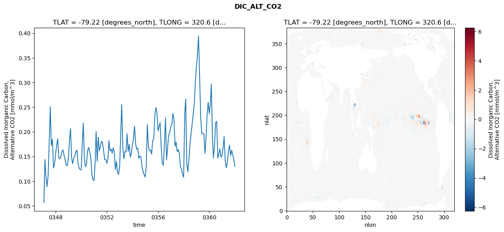
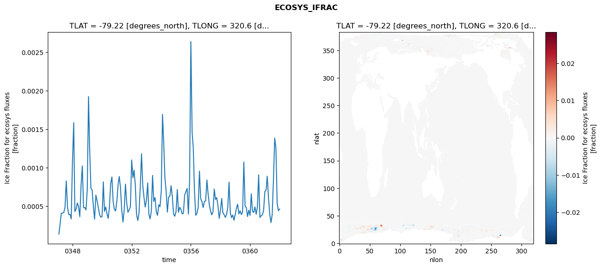
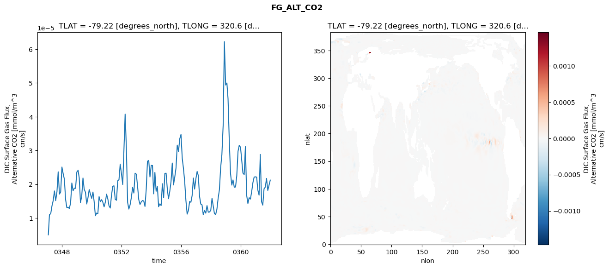

glb-dor_North_Atlantic_basin_042_1999-01-01_00168#
Simulation details#
Case: smyle.cdr-atlas-v0.glb-dor_North_Atlantic_basin_042_1999-01-01_00168.001
Basin: North_Atlantic_basin
Polygon: 42.0
Start date: 1999-01
Show code cell source Hide code cell source
import xarray as xr
import matplotlib.pyplot as plt
Show code cell source Hide code cell source
zarr_store = "/path/to/zarr/store"
# Parameters
zarr_store = "/global/cfs/projectdirs/m4746/Projects/Ocean-CDR-Atlas-v0/data/validation/smyle.cdr-atlas-v0.glb-dor_North_Atlantic_basin_042_1999-01-01_00168.001.validation.zarr"
Show code cell source Hide code cell source
%%time
ds_o = xr.open_zarr(zarr_store).compute()
ds_o
CPU times: user 647 ms, sys: 450 ms, total: 1.1 s
Wall time: 1.29 s
<xarray.Dataset> Size: 2MB
Dimensions: (nlat: 384, nlon: 320, time: 180)
Coordinates:
TLAT float64 8B -79.22
TLONG float64 8B 320.6
ULAT float64 8B -78.95
ULONG float64 8B 321.1
* time (time) object 1kB 0347-02-01 00:00:00 ... 0362-01-01 0...
z_t float32 4B 500.0
Dimensions without coordinates: nlat, nlon
Data variables:
ALK_ALT_CO2_diff (nlat, nlon) float32 492kB nan nan nan ... nan nan nan
ALK_ALT_CO2_rmse (time) float64 1kB 0.05514 0.1476 ... 0.0936 0.07308
DIC_ALT_CO2_diff (nlat, nlon) float32 492kB nan nan nan ... nan nan nan
DIC_ALT_CO2_rmse (time) float64 1kB 0.05675 0.1438 ... 0.1454 0.1298
ECOSYS_IFRAC_diff (nlat, nlon) float32 492kB nan nan nan ... nan nan nan
ECOSYS_IFRAC_rmse (time) float64 1kB 0.0001399 0.0002685 ... 0.0004642
FG_ALT_CO2_diff (nlat, nlon) float32 492kB nan nan nan ... nan nan nan
FG_ALT_CO2_rmse (time) float64 1kB 4.987e-06 1.098e-05 ... 2.121e-05xarray.Dataset
- nlat: 384
- nlon: 320
- time: 180
- TLAT()float64-79.22
- long_name :
- array of t-grid latitudes
- units :
- degrees_north
array(-79.22052261)
- TLONG()float64320.6
- long_name :
- array of t-grid longitudes
- units :
- degrees_east
array(320.56250892)
- ULAT()float64-78.95
- long_name :
- array of u-grid latitudes
- units :
- degrees_north
array(-78.95289509)
- ULONG()float64321.1
- long_name :
- array of u-grid longitudes
- units :
- degrees_east
array(321.12500894)
- time(time)object0347-02-01 00:00:00 ... 0362-01-...
- bounds :
- time_bound
- long_name :
- time
array([cftime.DatetimeNoLeap(347, 2, 1, 0, 0, 0, 0, has_year_zero=True), cftime.DatetimeNoLeap(347, 3, 1, 0, 0, 0, 0, has_year_zero=True), cftime.DatetimeNoLeap(347, 4, 1, 0, 0, 0, 0, has_year_zero=True), cftime.DatetimeNoLeap(347, 5, 1, 0, 0, 0, 0, has_year_zero=True), cftime.DatetimeNoLeap(347, 6, 1, 0, 0, 0, 0, has_year_zero=True), cftime.DatetimeNoLeap(347, 7, 1, 0, 0, 0, 0, has_year_zero=True), cftime.DatetimeNoLeap(347, 8, 1, 0, 0, 0, 0, has_year_zero=True), cftime.DatetimeNoLeap(347, 9, 1, 0, 0, 0, 0, has_year_zero=True), cftime.DatetimeNoLeap(347, 10, 1, 0, 0, 0, 0, has_year_zero=True), cftime.DatetimeNoLeap(347, 11, 1, 0, 0, 0, 0, has_year_zero=True), cftime.DatetimeNoLeap(347, 12, 1, 0, 0, 0, 0, has_year_zero=True), cftime.DatetimeNoLeap(348, 1, 1, 0, 0, 0, 0, has_year_zero=True), cftime.DatetimeNoLeap(348, 2, 1, 0, 0, 0, 0, has_year_zero=True), cftime.DatetimeNoLeap(348, 3, 1, 0, 0, 0, 0, has_year_zero=True), cftime.DatetimeNoLeap(348, 4, 1, 0, 0, 0, 0, has_year_zero=True), cftime.DatetimeNoLeap(348, 5, 1, 0, 0, 0, 0, has_year_zero=True), cftime.DatetimeNoLeap(348, 6, 1, 0, 0, 0, 0, has_year_zero=True), cftime.DatetimeNoLeap(348, 7, 1, 0, 0, 0, 0, has_year_zero=True), cftime.DatetimeNoLeap(348, 8, 1, 0, 0, 0, 0, has_year_zero=True), cftime.DatetimeNoLeap(348, 9, 1, 0, 0, 0, 0, has_year_zero=True), cftime.DatetimeNoLeap(348, 10, 1, 0, 0, 0, 0, has_year_zero=True), cftime.DatetimeNoLeap(348, 11, 1, 0, 0, 0, 0, has_year_zero=True), cftime.DatetimeNoLeap(348, 12, 1, 0, 0, 0, 0, has_year_zero=True), cftime.DatetimeNoLeap(349, 1, 1, 0, 0, 0, 0, has_year_zero=True), cftime.DatetimeNoLeap(349, 2, 1, 0, 0, 0, 0, has_year_zero=True), cftime.DatetimeNoLeap(349, 3, 1, 0, 0, 0, 0, has_year_zero=True), cftime.DatetimeNoLeap(349, 4, 1, 0, 0, 0, 0, has_year_zero=True), cftime.DatetimeNoLeap(349, 5, 1, 0, 0, 0, 0, has_year_zero=True), cftime.DatetimeNoLeap(349, 6, 1, 0, 0, 0, 0, has_year_zero=True), cftime.DatetimeNoLeap(349, 7, 1, 0, 0, 0, 0, has_year_zero=True), cftime.DatetimeNoLeap(349, 8, 1, 0, 0, 0, 0, has_year_zero=True), cftime.DatetimeNoLeap(349, 9, 1, 0, 0, 0, 0, has_year_zero=True), cftime.DatetimeNoLeap(349, 10, 1, 0, 0, 0, 0, has_year_zero=True), cftime.DatetimeNoLeap(349, 11, 1, 0, 0, 0, 0, has_year_zero=True), cftime.DatetimeNoLeap(349, 12, 1, 0, 0, 0, 0, has_year_zero=True), cftime.DatetimeNoLeap(350, 1, 1, 0, 0, 0, 0, has_year_zero=True), cftime.DatetimeNoLeap(350, 2, 1, 0, 0, 0, 0, has_year_zero=True), cftime.DatetimeNoLeap(350, 3, 1, 0, 0, 0, 0, has_year_zero=True), cftime.DatetimeNoLeap(350, 4, 1, 0, 0, 0, 0, has_year_zero=True), cftime.DatetimeNoLeap(350, 5, 1, 0, 0, 0, 0, has_year_zero=True), cftime.DatetimeNoLeap(350, 6, 1, 0, 0, 0, 0, has_year_zero=True), cftime.DatetimeNoLeap(350, 7, 1, 0, 0, 0, 0, has_year_zero=True), cftime.DatetimeNoLeap(350, 8, 1, 0, 0, 0, 0, has_year_zero=True), cftime.DatetimeNoLeap(350, 9, 1, 0, 0, 0, 0, has_year_zero=True), cftime.DatetimeNoLeap(350, 10, 1, 0, 0, 0, 0, has_year_zero=True), cftime.DatetimeNoLeap(350, 11, 1, 0, 0, 0, 0, has_year_zero=True), cftime.DatetimeNoLeap(350, 12, 1, 0, 0, 0, 0, has_year_zero=True), cftime.DatetimeNoLeap(351, 1, 1, 0, 0, 0, 0, has_year_zero=True), cftime.DatetimeNoLeap(351, 2, 1, 0, 0, 0, 0, has_year_zero=True), cftime.DatetimeNoLeap(351, 3, 1, 0, 0, 0, 0, has_year_zero=True), cftime.DatetimeNoLeap(351, 4, 1, 0, 0, 0, 0, has_year_zero=True), cftime.DatetimeNoLeap(351, 5, 1, 0, 0, 0, 0, has_year_zero=True), cftime.DatetimeNoLeap(351, 6, 1, 0, 0, 0, 0, has_year_zero=True), cftime.DatetimeNoLeap(351, 7, 1, 0, 0, 0, 0, has_year_zero=True), cftime.DatetimeNoLeap(351, 8, 1, 0, 0, 0, 0, has_year_zero=True), cftime.DatetimeNoLeap(351, 9, 1, 0, 0, 0, 0, has_year_zero=True), cftime.DatetimeNoLeap(351, 10, 1, 0, 0, 0, 0, has_year_zero=True), cftime.DatetimeNoLeap(351, 11, 1, 0, 0, 0, 0, has_year_zero=True), cftime.DatetimeNoLeap(351, 12, 1, 0, 0, 0, 0, has_year_zero=True), cftime.DatetimeNoLeap(352, 1, 1, 0, 0, 0, 0, has_year_zero=True), cftime.DatetimeNoLeap(352, 2, 1, 0, 0, 0, 0, has_year_zero=True), cftime.DatetimeNoLeap(352, 3, 1, 0, 0, 0, 0, has_year_zero=True), cftime.DatetimeNoLeap(352, 4, 1, 0, 0, 0, 0, has_year_zero=True), cftime.DatetimeNoLeap(352, 5, 1, 0, 0, 0, 0, has_year_zero=True), cftime.DatetimeNoLeap(352, 6, 1, 0, 0, 0, 0, has_year_zero=True), cftime.DatetimeNoLeap(352, 7, 1, 0, 0, 0, 0, has_year_zero=True), cftime.DatetimeNoLeap(352, 8, 1, 0, 0, 0, 0, has_year_zero=True), cftime.DatetimeNoLeap(352, 9, 1, 0, 0, 0, 0, has_year_zero=True), cftime.DatetimeNoLeap(352, 10, 1, 0, 0, 0, 0, has_year_zero=True), cftime.DatetimeNoLeap(352, 11, 1, 0, 0, 0, 0, has_year_zero=True), cftime.DatetimeNoLeap(352, 12, 1, 0, 0, 0, 0, has_year_zero=True), cftime.DatetimeNoLeap(353, 1, 1, 0, 0, 0, 0, has_year_zero=True), cftime.DatetimeNoLeap(353, 2, 1, 0, 0, 0, 0, has_year_zero=True), cftime.DatetimeNoLeap(353, 3, 1, 0, 0, 0, 0, has_year_zero=True), cftime.DatetimeNoLeap(353, 4, 1, 0, 0, 0, 0, has_year_zero=True), cftime.DatetimeNoLeap(353, 5, 1, 0, 0, 0, 0, has_year_zero=True), cftime.DatetimeNoLeap(353, 6, 1, 0, 0, 0, 0, has_year_zero=True), cftime.DatetimeNoLeap(353, 7, 1, 0, 0, 0, 0, has_year_zero=True), cftime.DatetimeNoLeap(353, 8, 1, 0, 0, 0, 0, has_year_zero=True), cftime.DatetimeNoLeap(353, 9, 1, 0, 0, 0, 0, has_year_zero=True), cftime.DatetimeNoLeap(353, 10, 1, 0, 0, 0, 0, has_year_zero=True), cftime.DatetimeNoLeap(353, 11, 1, 0, 0, 0, 0, has_year_zero=True), cftime.DatetimeNoLeap(353, 12, 1, 0, 0, 0, 0, has_year_zero=True), cftime.DatetimeNoLeap(354, 1, 1, 0, 0, 0, 0, has_year_zero=True), cftime.DatetimeNoLeap(354, 2, 1, 0, 0, 0, 0, has_year_zero=True), cftime.DatetimeNoLeap(354, 3, 1, 0, 0, 0, 0, has_year_zero=True), cftime.DatetimeNoLeap(354, 4, 1, 0, 0, 0, 0, has_year_zero=True), cftime.DatetimeNoLeap(354, 5, 1, 0, 0, 0, 0, has_year_zero=True), cftime.DatetimeNoLeap(354, 6, 1, 0, 0, 0, 0, has_year_zero=True), cftime.DatetimeNoLeap(354, 7, 1, 0, 0, 0, 0, has_year_zero=True), cftime.DatetimeNoLeap(354, 8, 1, 0, 0, 0, 0, has_year_zero=True), cftime.DatetimeNoLeap(354, 9, 1, 0, 0, 0, 0, has_year_zero=True), cftime.DatetimeNoLeap(354, 10, 1, 0, 0, 0, 0, has_year_zero=True), cftime.DatetimeNoLeap(354, 11, 1, 0, 0, 0, 0, has_year_zero=True), cftime.DatetimeNoLeap(354, 12, 1, 0, 0, 0, 0, has_year_zero=True), cftime.DatetimeNoLeap(355, 1, 1, 0, 0, 0, 0, has_year_zero=True), cftime.DatetimeNoLeap(355, 2, 1, 0, 0, 0, 0, has_year_zero=True), cftime.DatetimeNoLeap(355, 3, 1, 0, 0, 0, 0, has_year_zero=True), cftime.DatetimeNoLeap(355, 4, 1, 0, 0, 0, 0, has_year_zero=True), cftime.DatetimeNoLeap(355, 5, 1, 0, 0, 0, 0, has_year_zero=True), cftime.DatetimeNoLeap(355, 6, 1, 0, 0, 0, 0, has_year_zero=True), cftime.DatetimeNoLeap(355, 7, 1, 0, 0, 0, 0, has_year_zero=True), cftime.DatetimeNoLeap(355, 8, 1, 0, 0, 0, 0, has_year_zero=True), cftime.DatetimeNoLeap(355, 9, 1, 0, 0, 0, 0, has_year_zero=True), cftime.DatetimeNoLeap(355, 10, 1, 0, 0, 0, 0, has_year_zero=True), cftime.DatetimeNoLeap(355, 11, 1, 0, 0, 0, 0, has_year_zero=True), cftime.DatetimeNoLeap(355, 12, 1, 0, 0, 0, 0, has_year_zero=True), cftime.DatetimeNoLeap(356, 1, 1, 0, 0, 0, 0, has_year_zero=True), cftime.DatetimeNoLeap(356, 2, 1, 0, 0, 0, 0, has_year_zero=True), cftime.DatetimeNoLeap(356, 3, 1, 0, 0, 0, 0, has_year_zero=True), cftime.DatetimeNoLeap(356, 4, 1, 0, 0, 0, 0, has_year_zero=True), cftime.DatetimeNoLeap(356, 5, 1, 0, 0, 0, 0, has_year_zero=True), cftime.DatetimeNoLeap(356, 6, 1, 0, 0, 0, 0, has_year_zero=True), cftime.DatetimeNoLeap(356, 7, 1, 0, 0, 0, 0, has_year_zero=True), cftime.DatetimeNoLeap(356, 8, 1, 0, 0, 0, 0, has_year_zero=True), cftime.DatetimeNoLeap(356, 9, 1, 0, 0, 0, 0, has_year_zero=True), cftime.DatetimeNoLeap(356, 10, 1, 0, 0, 0, 0, has_year_zero=True), cftime.DatetimeNoLeap(356, 11, 1, 0, 0, 0, 0, has_year_zero=True), cftime.DatetimeNoLeap(356, 12, 1, 0, 0, 0, 0, has_year_zero=True), cftime.DatetimeNoLeap(357, 1, 1, 0, 0, 0, 0, has_year_zero=True), cftime.DatetimeNoLeap(357, 2, 1, 0, 0, 0, 0, has_year_zero=True), cftime.DatetimeNoLeap(357, 3, 1, 0, 0, 0, 0, has_year_zero=True), cftime.DatetimeNoLeap(357, 4, 1, 0, 0, 0, 0, has_year_zero=True), cftime.DatetimeNoLeap(357, 5, 1, 0, 0, 0, 0, has_year_zero=True), cftime.DatetimeNoLeap(357, 6, 1, 0, 0, 0, 0, has_year_zero=True), cftime.DatetimeNoLeap(357, 7, 1, 0, 0, 0, 0, has_year_zero=True), cftime.DatetimeNoLeap(357, 8, 1, 0, 0, 0, 0, has_year_zero=True), cftime.DatetimeNoLeap(357, 9, 1, 0, 0, 0, 0, has_year_zero=True), cftime.DatetimeNoLeap(357, 10, 1, 0, 0, 0, 0, has_year_zero=True), cftime.DatetimeNoLeap(357, 11, 1, 0, 0, 0, 0, has_year_zero=True), cftime.DatetimeNoLeap(357, 12, 1, 0, 0, 0, 0, has_year_zero=True), cftime.DatetimeNoLeap(358, 1, 1, 0, 0, 0, 0, has_year_zero=True), cftime.DatetimeNoLeap(358, 2, 1, 0, 0, 0, 0, has_year_zero=True), cftime.DatetimeNoLeap(358, 3, 1, 0, 0, 0, 0, has_year_zero=True), cftime.DatetimeNoLeap(358, 4, 1, 0, 0, 0, 0, has_year_zero=True), cftime.DatetimeNoLeap(358, 5, 1, 0, 0, 0, 0, has_year_zero=True), cftime.DatetimeNoLeap(358, 6, 1, 0, 0, 0, 0, has_year_zero=True), cftime.DatetimeNoLeap(358, 7, 1, 0, 0, 0, 0, has_year_zero=True), cftime.DatetimeNoLeap(358, 8, 1, 0, 0, 0, 0, has_year_zero=True), cftime.DatetimeNoLeap(358, 9, 1, 0, 0, 0, 0, has_year_zero=True), cftime.DatetimeNoLeap(358, 10, 1, 0, 0, 0, 0, has_year_zero=True), cftime.DatetimeNoLeap(358, 11, 1, 0, 0, 0, 0, has_year_zero=True), cftime.DatetimeNoLeap(358, 12, 1, 0, 0, 0, 0, has_year_zero=True), cftime.DatetimeNoLeap(359, 1, 1, 0, 0, 0, 0, has_year_zero=True), cftime.DatetimeNoLeap(359, 2, 1, 0, 0, 0, 0, has_year_zero=True), cftime.DatetimeNoLeap(359, 3, 1, 0, 0, 0, 0, has_year_zero=True), cftime.DatetimeNoLeap(359, 4, 1, 0, 0, 0, 0, has_year_zero=True), cftime.DatetimeNoLeap(359, 5, 1, 0, 0, 0, 0, has_year_zero=True), cftime.DatetimeNoLeap(359, 6, 1, 0, 0, 0, 0, has_year_zero=True), cftime.DatetimeNoLeap(359, 7, 1, 0, 0, 0, 0, has_year_zero=True), cftime.DatetimeNoLeap(359, 8, 1, 0, 0, 0, 0, has_year_zero=True), cftime.DatetimeNoLeap(359, 9, 1, 0, 0, 0, 0, has_year_zero=True), cftime.DatetimeNoLeap(359, 10, 1, 0, 0, 0, 0, has_year_zero=True), cftime.DatetimeNoLeap(359, 11, 1, 0, 0, 0, 0, has_year_zero=True), cftime.DatetimeNoLeap(359, 12, 1, 0, 0, 0, 0, has_year_zero=True), cftime.DatetimeNoLeap(360, 1, 1, 0, 0, 0, 0, has_year_zero=True), cftime.DatetimeNoLeap(360, 2, 1, 0, 0, 0, 0, has_year_zero=True), cftime.DatetimeNoLeap(360, 3, 1, 0, 0, 0, 0, has_year_zero=True), cftime.DatetimeNoLeap(360, 4, 1, 0, 0, 0, 0, has_year_zero=True), cftime.DatetimeNoLeap(360, 5, 1, 0, 0, 0, 0, has_year_zero=True), cftime.DatetimeNoLeap(360, 6, 1, 0, 0, 0, 0, has_year_zero=True), cftime.DatetimeNoLeap(360, 7, 1, 0, 0, 0, 0, has_year_zero=True), cftime.DatetimeNoLeap(360, 8, 1, 0, 0, 0, 0, has_year_zero=True), cftime.DatetimeNoLeap(360, 9, 1, 0, 0, 0, 0, has_year_zero=True), cftime.DatetimeNoLeap(360, 10, 1, 0, 0, 0, 0, has_year_zero=True), cftime.DatetimeNoLeap(360, 11, 1, 0, 0, 0, 0, has_year_zero=True), cftime.DatetimeNoLeap(360, 12, 1, 0, 0, 0, 0, has_year_zero=True), cftime.DatetimeNoLeap(361, 1, 1, 0, 0, 0, 0, has_year_zero=True), cftime.DatetimeNoLeap(361, 2, 1, 0, 0, 0, 0, has_year_zero=True), cftime.DatetimeNoLeap(361, 3, 1, 0, 0, 0, 0, has_year_zero=True), cftime.DatetimeNoLeap(361, 4, 1, 0, 0, 0, 0, has_year_zero=True), cftime.DatetimeNoLeap(361, 5, 1, 0, 0, 0, 0, has_year_zero=True), cftime.DatetimeNoLeap(361, 6, 1, 0, 0, 0, 0, has_year_zero=True), cftime.DatetimeNoLeap(361, 7, 1, 0, 0, 0, 0, has_year_zero=True), cftime.DatetimeNoLeap(361, 8, 1, 0, 0, 0, 0, has_year_zero=True), cftime.DatetimeNoLeap(361, 9, 1, 0, 0, 0, 0, has_year_zero=True), cftime.DatetimeNoLeap(361, 10, 1, 0, 0, 0, 0, has_year_zero=True), cftime.DatetimeNoLeap(361, 11, 1, 0, 0, 0, 0, has_year_zero=True), cftime.DatetimeNoLeap(361, 12, 1, 0, 0, 0, 0, has_year_zero=True), cftime.DatetimeNoLeap(362, 1, 1, 0, 0, 0, 0, has_year_zero=True)], dtype=object) - z_t()float32500.0
- long_name :
- depth from surface to midpoint of layer
- positive :
- down
- units :
- centimeters
- valid_max :
- 537500.0
- valid_min :
- 500.0
array(500., dtype=float32)
- ALK_ALT_CO2_diff(nlat, nlon)float32nan nan nan nan ... nan nan nan nan
- cell_methods :
- time: mean
- grid_loc :
- 3111
- long_name :
- Alkalinity, Alternative CO2
- units :
- meq/m^3
array([[ nan, nan, nan, ..., nan, nan, nan], [ nan, nan, nan, ..., nan, nan, nan], [0.01391602, 0.01733398, 0.01879883, ..., nan, nan, nan], ..., [ nan, nan, nan, ..., nan, nan, nan], [ nan, nan, nan, ..., nan, nan, nan], [ nan, nan, nan, ..., nan, nan, nan]], dtype=float32) - ALK_ALT_CO2_rmse(time)float640.05514 0.1476 ... 0.0936 0.07308
- cell_methods :
- time: mean
- grid_loc :
- 3111
- long_name :
- Alkalinity, Alternative CO2
- units :
- meq/m^3
array([0.05513578, 0.14756116, 0.09777558, 0.06558283, 0.09256447, 0.15843598, 0.24306824, 0.14411913, 0.15207202, 0.08397951, 0.05602858, 0.06427521, 0.09053179, 0.13888347, 0.09761655, 0.11141454, 0.11869901, 0.11048002, 0.10063557, 0.07629281, 0.06016338, 0.05046597, 0.06346336, 0.0755677 , 0.13808262, 0.18361615, 0.11768501, 0.10435383, 0.11866851, 0.11614102, 0.12533558, 0.12273869, 0.06499039, 0.06563613, 0.06523072, 0.06200282, 0.15832228, 0.21497625, 0.13401177, 0.11420297, 0.11484028, 0.14079419, 0.13971774, 0.12106503, 0.11244846, 0.0610802 , 0.05510419, 0.0572096 , 0.10418274, 0.19737525, 0.12642154, 0.18687089, 0.13586823, 0.13684378, 0.14941324, 0.15484703, 0.10071226, 0.07871974, 0.08143281, 0.0714814 , 0.08547443, 0.14765077, 0.1074697 , 0.11801895, 0.12970811, 0.14575758, 0.1322693 , 0.07114385, 0.07752374, 0.0703585 , 0.062239 , 0.06885354, 0.18742054, 0.26186594, 0.15975638, 0.13380943, 0.15302906, 0.14022529, 0.19049685, 0.11238098, 0.07426266, 0.06852996, 0.07649978, 0.08133905, 0.10726779, 0.16089343, 0.11106146, 0.10735008, 0.13275413, 0.11091326, 0.11950784, 0.1080609 , 0.07802955, 0.06400942, 0.05908665, 0.06127576, 0.09340248, 0.17870268, 0.11838657, 0.10012395, 0.13002083, 0.11860692, 0.14834264, 0.14604029, 0.15898298, 0.15062681, 0.13579395, 0.0974827 , 0.10557787, 0.15776577, 0.11259922, 0.09901817, 0.09869009, 0.1371404 , 0.21146814, 0.10866453, 0.11087079, 0.13708264, 0.14743866, 0.15397494, 0.16264839, 0.20567959, 0.21030304, 0.14517225, 0.16251546, 0.13323162, 0.14017822, 0.13543304, 0.11702203, 0.10843381, 0.10712296, 0.09381285, 0.25173695, 0.28740632, 0.1364326 , 0.1152854 , 0.12884751, 0.14160049, 0.15247184, 0.15217525, 0.12382055, 0.12429442, 0.13623499, 0.14981466, 0.18715075, 0.20129019, 0.1542195 , 0.14048139, 0.13580939, 0.14900447, 0.15735279, 0.09808409, 0.101693 , 0.1086796 , 0.12910911, 0.12846056, 0.20122554, 0.26569071, 0.1392695 , 0.09811131, 0.1412182 , 0.18836798, 0.2014356 , 0.08505962, 0.09129912, 0.09166692, 0.07664007, 0.08653385, 0.12007279, 0.16101972, 0.09721053, 0.09277737, 0.11894337, 0.13577332, 0.14701643, 0.11471117, 0.12999376, 0.10416378, 0.09359814, 0.07307625]) - DIC_ALT_CO2_diff(nlat, nlon)float32nan nan nan nan ... nan nan nan nan
- cell_methods :
- time: mean
- grid_loc :
- 3111
- long_name :
- Dissolved Inorganic Carbon, Alternative CO2
- units :
- mmol/m^3
array([[ nan, nan, nan, ..., nan, nan, nan], [ nan, nan, nan, ..., nan, nan, nan], [0.01586914, 0.02807617, 0.03662109, ..., nan, nan, nan], ..., [ nan, nan, nan, ..., nan, nan, nan], [ nan, nan, nan, ..., nan, nan, nan], [ nan, nan, nan, ..., nan, nan, nan]], dtype=float32) - DIC_ALT_CO2_rmse(time)float640.05675 0.1438 ... 0.1454 0.1298
- cell_methods :
- time: mean
- grid_loc :
- 3111
- long_name :
- Dissolved Inorganic Carbon, Alternative CO2
- units :
- mmol/m^3
array([0.05675182, 0.14378893, 0.10836499, 0.08905998, 0.11129863, 0.17692369, 0.25096285, 0.17236968, 0.18501775, 0.12654002, 0.13461842, 0.15500361, 0.17371476, 0.18600555, 0.14796904, 0.14526911, 0.15055309, 0.16061949, 0.16341761, 0.15133281, 0.14285106, 0.13205346, 0.13165403, 0.14672111, 0.18543842, 0.2065961 , 0.1489315 , 0.13546444, 0.14629082, 0.15085316, 0.15970294, 0.16282695, 0.13643453, 0.12688749, 0.1234849 , 0.12293009, 0.17967765, 0.21768131, 0.1459975 , 0.12943315, 0.13423473, 0.16192249, 0.16860811, 0.1585911 , 0.14676291, 0.11321414, 0.10284101, 0.10124018, 0.1365265 , 0.20074135, 0.14017714, 0.18940288, 0.16161831, 0.17021665, 0.1811439 , 0.17677554, 0.1616605 , 0.14387046, 0.14408171, 0.13612189, 0.1445763 , 0.18218267, 0.16187023, 0.1650843 , 0.15639162, 0.16767038, 0.1596049 , 0.12359879, 0.14045561, 0.11901195, 0.11373819, 0.12892373, 0.19599756, 0.25514441, 0.16961769, 0.14522829, 0.16030341, 0.15933423, 0.19624687, 0.16046697, 0.1745842 , 0.14886615, 0.15664802, 0.17390618, 0.18610539, 0.21138029, 0.17683777, 0.16493093, 0.16692228, 0.14609901, 0.15118967, 0.14906481, 0.12851683, 0.11946237, 0.11287097, 0.10843646, 0.13420283, 0.21459637, 0.17020882, 0.16232081, 0.16310229, 0.1548974 , 0.18194446, 0.18628733, 0.23214233, 0.24937349, 0.238958 , 0.20196633, 0.21096547, 0.21877271, 0.16916868, 0.13599021, 0.13247648, 0.17269215, 0.22841035, 0.14344151, 0.16824439, 0.19413666, 0.19894337, 0.21098905, 0.21570483, 0.23743375, 0.2251578 , 0.17055381, 0.17921392, 0.1599844 , 0.16409606, 0.15577453, 0.13050314, 0.12472613, 0.1140745 , 0.10793241, 0.23835146, 0.26630602, 0.13557934, 0.11912469, 0.14466484, 0.17549037, 0.19764615, 0.21563589, 0.23567194, 0.25839561, 0.30117744, 0.33241476, 0.35839037, 0.39428488, 0.31346894, 0.23053068, 0.19683808, 0.19741777, 0.19526806, 0.15620371, 0.18679531, 0.23529672, 0.25980238, 0.2371176 , 0.25609787, 0.29696615, 0.19049264, 0.14741942, 0.17234849, 0.21898088, 0.22115505, 0.14674504, 0.15490021, 0.16561395, 0.14836416, 0.15272506, 0.16868034, 0.19035795, 0.14206019, 0.12715259, 0.13802876, 0.16086989, 0.17307691, 0.15149799, 0.16300411, 0.15308749, 0.14538166, 0.12982004]) - ECOSYS_IFRAC_diff(nlat, nlon)float32nan nan nan nan ... nan nan nan nan
- cell_methods :
- time: mean
- grid_loc :
- 2110
- long_name :
- Ice Fraction for ecosys fluxes
- units :
- fraction
array([[ nan, nan, nan, ..., nan, nan, nan], [ nan, nan, nan, ..., nan, nan, nan], [ 1.9788742e-05, -1.3011694e-04, -2.4020672e-05, ..., nan, nan, nan], ..., [ nan, nan, nan, ..., nan, nan, nan], [ nan, nan, nan, ..., nan, nan, nan], [ nan, nan, nan, ..., nan, nan, nan]], dtype=float32) - ECOSYS_IFRAC_rmse(time)float640.0001399 0.0002685 ... 0.0004642
- cell_methods :
- time: mean
- grid_loc :
- 2110
- long_name :
- Ice Fraction for ecosys fluxes
- units :
- fraction
array([0.00013987, 0.00026851, 0.00040878, 0.00041154, 0.00041976, 0.00048489, 0.00082958, 0.00048568, 0.00039127, 0.00039513, 0.00033624, 0.00108552, 0.00158743, 0.00043124, 0.00046601, 0.00054353, 0.00049193, 0.00036479, 0.00077285, 0.00102471, 0.00048171, 0.00048339, 0.00045265, 0.00071935, 0.00192536, 0.00124529, 0.0007351 , 0.00071241, 0.00049052, 0.00033206, 0.00064566, 0.00057154, 0.00048324, 0.00038897, 0.00035791, 0.00036572, 0.00081678, 0.00043382, 0.00049136, 0.00040375, 0.0003422 , 0.00048601, 0.0007943 , 0.00088111, 0.00056383, 0.00045858, 0.00043884, 0.00056763, 0.00078621, 0.00088732, 0.00073751, 0.00044757, 0.00029526, 0.00045231, 0.00078852, 0.00054312, 0.00042206, 0.00045362, 0.00049231, 0.00110218, 0.0008709 , 0.00096913, 0.00077376, 0.00039434, 0.00031395, 0.00040945, 0.00075387, 0.00118261, 0.00077817, 0.00061392, 0.00048959, 0.0005848 , 0.00080353, 0.00039871, 0.00033613, 0.00043531, 0.00090121, 0.00056252, 0.00061414, 0.00042863, 0.00038131, 0.00052035, 0.00049359, 0.00069272, 0.00169444, 0.00134809, 0.00086864, 0.00070249, 0.0004238 , 0.00061925, 0.00063228, 0.00076687, 0.00062616, 0.00039794, 0.00037024, 0.00043486, 0.00071757, 0.00042152, 0.00048687, 0.00046107, 0.00040034, 0.00041127, 0.00064566, 0.00069052, 0.000733 , 0.00039817, 0.00083233, 0.00264108, 0.00145959, 0.001264 , 0.00068452, 0.00038284, 0.00040776, 0.00048581, 0.00095687, 0.00059791, 0.00056055, 0.00048242, 0.00056188, 0.00057081, 0.00084186, 0.00066851, 0.00052149, 0.00044152, 0.00038862, 0.00042887, 0.00072345, 0.00058823, 0.00061249, 0.00050445, 0.00034217, 0.00044796, 0.00060021, 0.00041767, 0.00039096, 0.00035581, 0.00039182, 0.00048993, 0.00081335, 0.00041722, 0.00035231, 0.00038649, 0.00031746, 0.00039708, 0.00047855, 0.0005278 , 0.00039984, 0.00044079, 0.00039167, 0.00042431, 0.00107574, 0.00050238, 0.00047986, 0.00036663, 0.00044848, 0.0003822 , 0.00066325, 0.0004334 , 0.00042001, 0.00049239, 0.00039596, 0.00048726, 0.00091015, 0.00035472, 0.00037709, 0.00038946, 0.00044347, 0.00069148, 0.00071286, 0.00089109, 0.00060992, 0.00039512, 0.00028752, 0.00038989, 0.00084281, 0.00138617, 0.00125643, 0.00053872, 0.00044211, 0.00046417]) - FG_ALT_CO2_diff(nlat, nlon)float32nan nan nan nan ... nan nan nan nan
- cell_methods :
- time: mean
- grid_loc :
- 2110
- long_name :
- DIC Surface Gas Flux, Alternative CO2
- units :
- mmol/m^3 cm/s
array([[ nan, nan, nan, ..., nan, nan, nan], [ nan, nan, nan, ..., nan, nan, nan], [8.6894261e-08, 1.9846584e-07, 9.5265023e-09, ..., nan, nan, nan], ..., [ nan, nan, nan, ..., nan, nan, nan], [ nan, nan, nan, ..., nan, nan, nan], [ nan, nan, nan, ..., nan, nan, nan]], dtype=float32) - FG_ALT_CO2_rmse(time)float644.987e-06 1.098e-05 ... 2.121e-05
- cell_methods :
- time: mean
- grid_loc :
- 2110
- long_name :
- DIC Surface Gas Flux, Alternative CO2
- units :
- mmol/m^3 cm/s
array([4.98691941e-06, 1.09842062e-05, 1.12380224e-05, 1.35311998e-05, 1.51523702e-05, 1.79911876e-05, 1.51362885e-05, 1.77726849e-05, 2.36657783e-05, 1.70619322e-05, 1.76805066e-05, 2.50786915e-05, 2.30651308e-05, 2.15078561e-05, 1.54547850e-05, 1.30460529e-05, 1.31737800e-05, 1.27894778e-05, 1.44030484e-05, 2.03476295e-05, 1.80256928e-05, 1.88324369e-05, 1.87611411e-05, 2.35942908e-05, 2.41118885e-05, 2.18674470e-05, 1.45692836e-05, 1.63811675e-05, 2.18285150e-05, 1.84877456e-05, 1.76206833e-05, 1.41402326e-05, 1.59248848e-05, 1.84102229e-05, 1.70247437e-05, 1.57795164e-05, 1.76679865e-05, 1.49633895e-05, 1.06458565e-05, 1.14316087e-05, 1.12674285e-05, 1.63074225e-05, 1.48113058e-05, 1.54154364e-05, 1.46678287e-05, 1.32827753e-05, 1.46338936e-05, 1.70350058e-05, 1.55996468e-05, 1.35948540e-05, 1.29241841e-05, 1.66283961e-05, 1.93573556e-05, 1.95225351e-05, 1.55195059e-05, 1.52394399e-05, 2.10077977e-05, 2.13284112e-05, 2.59419521e-05, 2.30638997e-05, 1.99118099e-05, 2.95640623e-05, 4.07634678e-05, 3.08680942e-05, 1.46189738e-05, 1.26203409e-05, 1.38824708e-05, 1.60887693e-05, 1.90493499e-05, 1.73837838e-05, 2.32537011e-05, 2.29573690e-05, 1.92301581e-05, 1.54311879e-05, 1.39873071e-05, 1.47399774e-05, 1.51501564e-05, 1.50223925e-05, 1.34044237e-05, 1.86169673e-05, ... 2.62591483e-05, 1.97757065e-05, 2.20754044e-05, 2.48074037e-05, 3.15620939e-05, 2.96171523e-05, 3.34168008e-05, 3.47183547e-05, 2.76430039e-05, 2.48108754e-05, 2.08930654e-05, 1.52664703e-05, 1.11295183e-05, 1.21729807e-05, 1.48690419e-05, 1.46379192e-05, 1.66132617e-05, 2.18148779e-05, 1.85469883e-05, 2.15597434e-05, 2.37725875e-05, 2.25674667e-05, 1.63994494e-05, 1.41060406e-05, 1.38802845e-05, 1.09584971e-05, 1.22110085e-05, 1.14071080e-05, 1.36527469e-05, 1.17052210e-05, 1.17464205e-05, 1.22286532e-05, 1.58010890e-05, 1.37097636e-05, 1.13044830e-05, 1.09688345e-05, 1.26006243e-05, 1.57931114e-05, 1.83360346e-05, 2.49400342e-05, 2.87321264e-05, 3.73850843e-05, 6.22085639e-05, 4.93790503e-05, 4.99731416e-05, 4.53029724e-05, 3.26092826e-05, 2.31320349e-05, 1.97283440e-05, 2.12615006e-05, 1.91015105e-05, 1.91693919e-05, 2.24695679e-05, 2.97609259e-05, 3.15232978e-05, 3.09441750e-05, 2.68711878e-05, 2.32853599e-05, 2.28529770e-05, 3.11346493e-05, 1.66799523e-05, 1.42858767e-05, 1.59886755e-05, 1.55894784e-05, 1.77257270e-05, 2.04663469e-05, 2.21049495e-05, 2.21732838e-05, 2.20891480e-05, 1.83079967e-05, 1.67467763e-05, 2.88109810e-05, 1.47949160e-05, 1.37871291e-05, 1.86320651e-05, 1.91341482e-05, 2.17139311e-05, 1.81486589e-05, 1.96511597e-05, 2.12128104e-05])
- timePandasIndex
PandasIndex(CFTimeIndex([0347-02-01 00:00:00, 0347-03-01 00:00:00, 0347-04-01 00:00:00, 0347-05-01 00:00:00, 0347-06-01 00:00:00, 0347-07-01 00:00:00, 0347-08-01 00:00:00, 0347-09-01 00:00:00, 0347-10-01 00:00:00, 0347-11-01 00:00:00, ... 0361-04-01 00:00:00, 0361-05-01 00:00:00, 0361-06-01 00:00:00, 0361-07-01 00:00:00, 0361-08-01 00:00:00, 0361-09-01 00:00:00, 0361-10-01 00:00:00, 0361-11-01 00:00:00, 0361-12-01 00:00:00, 0362-01-01 00:00:00], dtype='object', length=180, calendar='noleap', freq='MS'))
Show code cell source Hide code cell source
variables = [v[:-5] for v in ds_o.variables if "_rmse" in v]
Show code cell source Hide code cell source
plt.rcParams.update({'figure.max_open_warning': 0})
for v in variables:
fig, axs = plt.subplots(1, 2, figsize=(15, 6))
ds_o[f"{v}_rmse"].plot(ax=axs[0])
ds_o[f"{v}_diff"].plot(ax=axs[1])
plt.suptitle(v, fontweight="bold")



